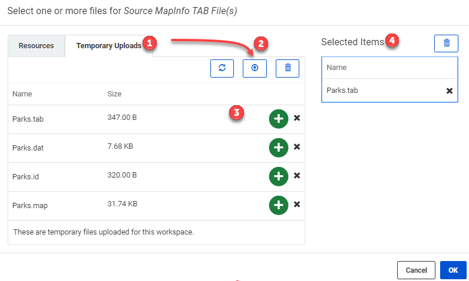
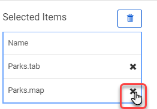

After completing this lesson, you’ll be able to:
Although it's easy for an author to publish data to an FME Server repository along with the workspace, it isn't a method that an end-user has access to.
Therefore, for files (rather than a feed or database), functionality exists to allow the end-user to upload data at run-time.
This workspace was created with a dynamic Reader and Writer. That means it is possible to process any source dataset (of the right format) and have it translated:
Of course, in this scenario publishing the data with the workspace does not make much sense. It is better if the user uploads data at runtime.
Provided the source dataset is a published parameter, this can be done easily in the Run Workspace page of the FME Server interface by dragging and dropping a file into the browser, or clicking the browse button:

This opens a dialog to select one or more files for the data type. To only upload the file temporarily, switch to the Temporary Uploads tab (1), then to upload the data click on the Upload Button (2). When uploading data that contains multiple files (like MapInfo Tab) ensure that you select all of the files. Once the data is uploaded to the Temporary Uploads, it will need to be added to the workspace, this is done by clicking on the green plus sign next to each file (3). Finally, before selecting OK, ensure all of the necessary files are selected (4). Note that all the files need to be uploaded, but only the main file needs to be selected for the workspace to run correctly, in this case, Parks.tab:

Now when the workspace runs, the selected user-uploaded data gets translated.
In the above example, the source dataset is in a format (MapInfo TAB) that consists of several files.
Although all files need to be uploaded, only the TAB file itself needs to be selected.

The method to use is to deselect files under the section Selected Items; here the .dat, .id, and .map files.
The files are still available, but FME won't treat each of them as a separate dataset, which is what would happen if they all remained selected.
There are some cautions and limitations to be concerned about when data is uploaded for translation by the end-user: